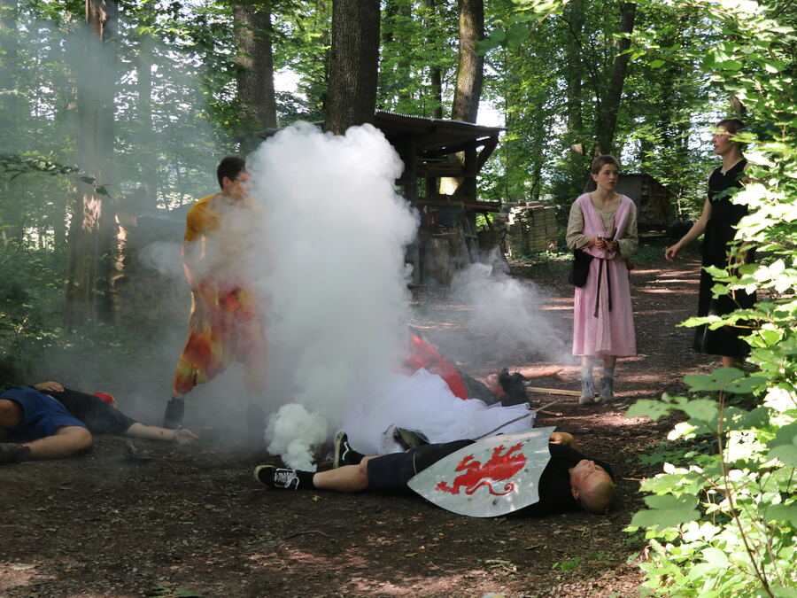
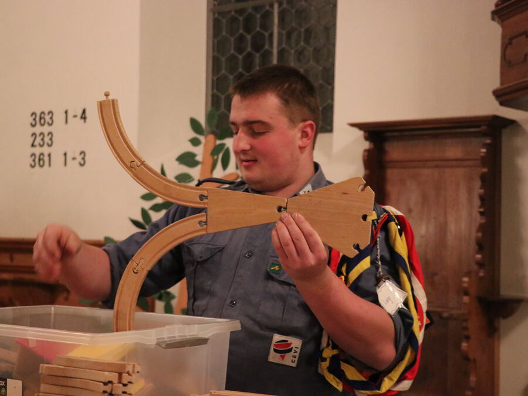

Programm
So läuft ein Cevinachmittag ab, und in diesen Gruppen sind die Kinder unterwegs.
Der Cevinachmittag
Alle zwei Wochen findet am Samstag ein Programm für Kinder von der 2. Klasse bis zur 1. Oberstufe statt. Treffpunkt ist um 13:45 Uhr der Begegnungsraum in Schönholzerswilen. Um 17:00 Uhr endet das Programm am selben Ort.
Für die Jüngsten gibt es die Fröschli: Kinder vom 1. Kindergarten bis zur 1. Klasse treffen sich einmal im Monat zu einem eigenen Programm. Ab der 2. Klasse wechseln sie in eine der grösseren Gruppen.
Schnuppern ohne Anmeldung: Dein Kind ist an jedem Cevinachmittag herzlich willkommen.
Mitnehmen
- Wetterfeste Kleidung
- Eventuell ein Sackmesser
Das Programm findet meistens draussen statt.

Alliprogramm
Alle Kinder verbringen den Nachmittag gemeinsam. Eine Geschichte bildet den Rahmen, zum Beispiel mit einem Geländespiel, bei dem ein Zelt für Abraham aufgebaut wird. Die Fröschli nehmen am Alliprogramm nicht teil.

Gruppenprogramm
Die Kinder sind nach Alter und Geschlecht in Gruppen eingeteilt. Jede Gruppe erhält ein altersgerechtes Programm mit einem kurzen Input. Die Fröschli haben ihr eigenes Gruppenprogramm.
Die Gruppen
Die jüngsten Kinder bilden eine gemeinsame Gruppe. Ab der 2. Klasse gibt es getrennte Mädchen- und Bubengruppen.
Fröschli
Unsere Jüngsten. Einmal im Monat: den Wald entdecken, gemeinsames Zvieri und eine Geschichte. Schnuppern geht ohne Anmeldung.
Füürlibuebe
Bewegung im Wald, Bauen am Gruppenplatz und weitere Abenteuer.
Die Wilden 7
Ausflüge in den Wald, gemeinsame Abenteuer und Kochen auf dem Feuer.
Bad Boys
Bauen am Gruppenplatz, Geländespiele und weitere Abenteuer für die älteren Buben.